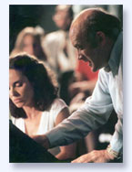

The mentoring relationship, as is simply stated in Taoist
philosophy, is the giving and receiving of wisdom, and requires
profound self-knowledge gained through contemplative self-reflective
practice. For mentorship one must discover a way of being,
a state of openness or vulnerability from
which to relate empathically with the mentored. In
this quality of resonant relationship, intuitive knowledge
and insight, which did not exist before, are awakened –
a revelation not available to either participant alone is
born.
Lorin
Hollander is available for teaching and mentoring in a variety
of settings. These experiences empower a breakthrough in creative
self-expression and personal, artistic and professional growth.
- Master classes
Transcend playing notes and mastering technical challenges.
Find the dance and heartful song which expresses the soul
and spirit of humanity in the music.
- Coaching, Mentoring and Private
Lessons
For students and musicians at all levels including professional
coaching.
- Seminars & Workshops with
Teachers and University or College Faculty
Deepening teacher training and professional development.
Programs focusing on the role of teacher as mentor and the
mentoring relationship, the importance of the arts and creativity
in learning and in the transformation of education.
- Music Therapy & Music
Medicine Symposia
By accessing the place of vulnerability within the universal
experience of emptiness or “primal wound,” discover
the underlying dynamics of the communion, sacred joining
or spiritual bond wherein a healing relationship becomes
possible. Essential for the training of mentors, integral
healers and bringing wellness into the public schools, music
therapy holds an opportunity recognized worldwide for fulfilling
these needs. It also holds an opportunity as a vibrant career
for aspiring performing musicians.
- Artist in Residence
Several day, week long, semester
or year long programs
|
- Life Coaching and Mentoring
for the Highly Gifted
These sessions (by phone) are
for students, parents, teachers and others seeking guidance
in life issues which include:
- Gifts and learning differences
in young people, talents often unrecognized and misunderstood
in educational settings.
- Stagefright – overcoming
physical and psychological difficulties through self-discovery.
- A new paradigm for understanding
the inner world of the highly and profoundly gifted
and the relationship this has to what Campbell and Jung
understood as the Hero’s Journey as found in the
world’s great mythologies.
- Other dimensions of personal
growth and the spiritual journey.
“Enlightened
music mentorship and visionary education allow us to
access some basic human core of resonance with the underlying
potentials in nature and human consciousness.”
- Artistic Advisor
and Development Consultant
of the New
England Conservatory Research Center for Learning
through Music and
the Music-in-Education
National Consortium
Based on his work for more than a generation with hundreds
of individual universities and communities, Lorin Hollander
has felt compelled to share these discoveries and possibilities
with a visionary leading edge music education and research
community.
|
Conductor’s Retreat at Medomak
Kenneth Kiesler,
Founder and Director
As mentor and guest teacher
since it’s inception, Lorin Hollander awakens the
deepest levels of being human and guides young conductors
in embracing the new paradigms of leadership – the
empowerment of authentic ownership and creative self-expression
of each musician. |
|
“By helping to awaken mindfulness and self-knowledge
I am dedicated to encouraging students of all ages to
become aware of their unique constellation of gifts,
which allow them clarity to choose realistic and fulfilling
career paths and moral, ethical spiritual cosmologies
for living.”
For
inquiries and information, please contact:
Tara
Hollander, Personal Representative
|
|
|